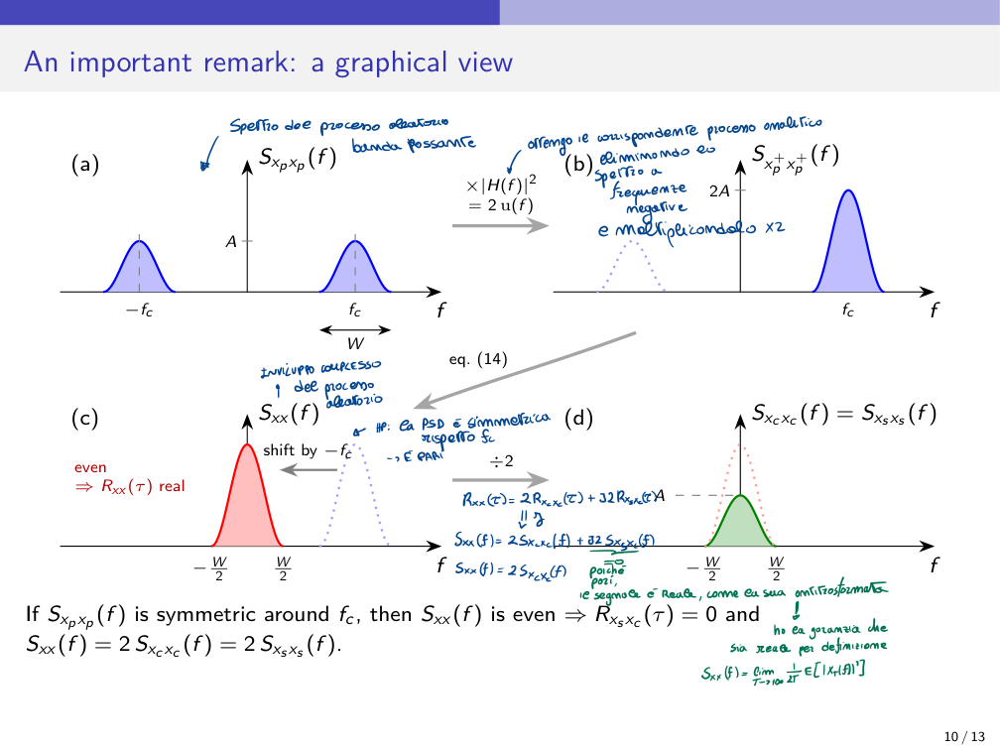
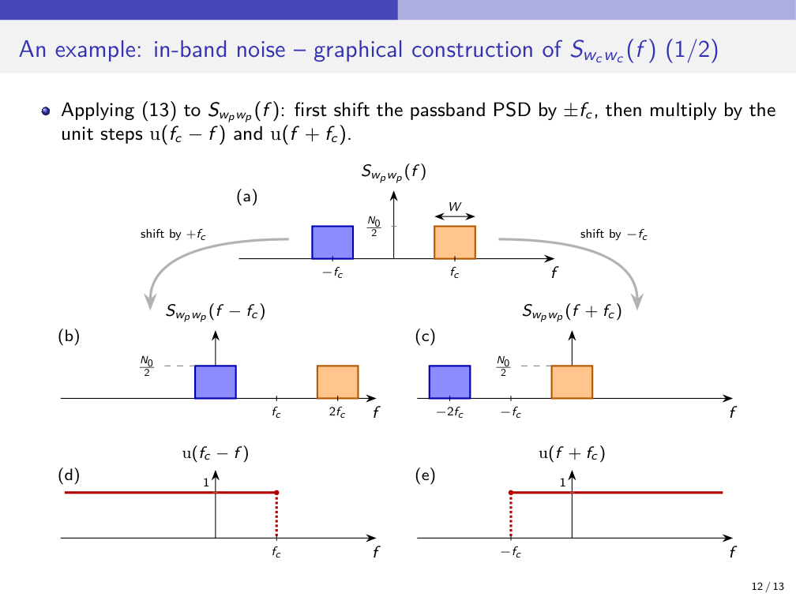
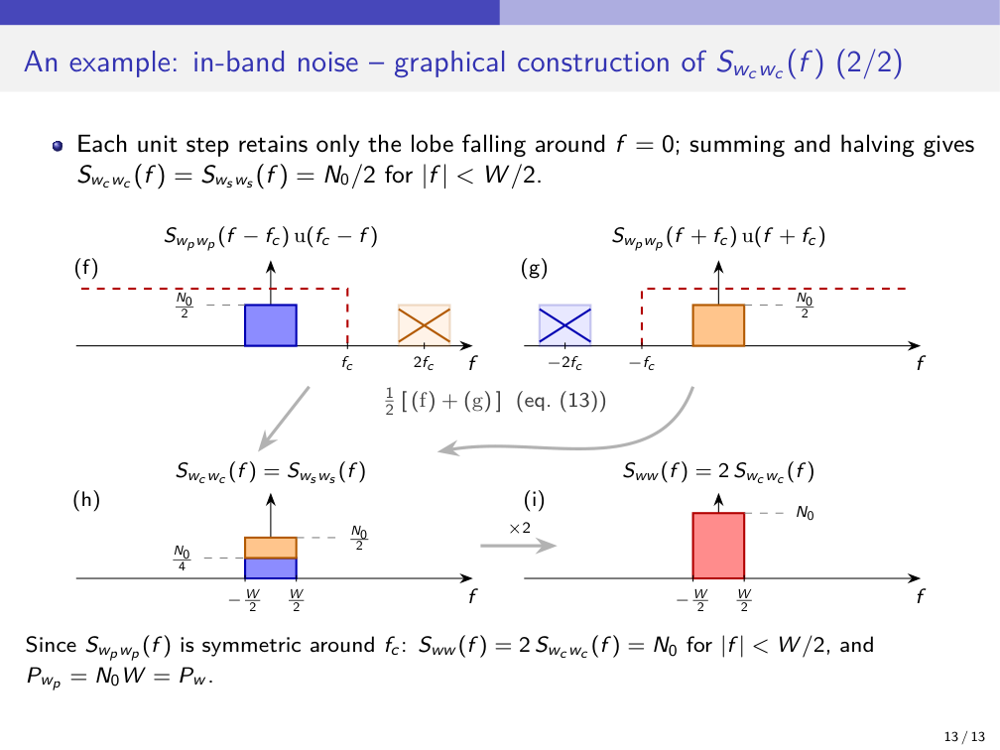

Intercorso · Lezione 7
Rappresentazione di Rice per i processi aleatori
Inviluppo complesso e componenti in quadratura di un processo passa-banda, loro PSD, rumore in banda.
Indice della lezione
- Processi in banda base e passa-banda
- Ipotesi, definizioni e processo analitico
- Inviluppo complesso e componenti in fase e quadratura
- Definizione di inviluppo complesso
- Le componenti sono congiuntamente WSS
- Teorema e dimostrazione
- PSD delle componenti e dell'inviluppo
- PSD delle componenti in quadratura
- Osservazione importante (1/2): PSD dell'inviluppo
- Osservazione importante (2/2): spettro simmetrico
- Vista grafica
- Esempio: rumore in banda passante
- Rumore in banda
- Costruzione grafica di S_{w_cw_c}(f)
- Spiegazioni e dimostrazioni passo-passo
- Domande da esame
Il corso, slide per slide
Processi in banda base e passa-banda
Ipotesi, definizioni e processo analitico
- Si assumono processi stocastici reali, WSS, a media nulla (\mu_x = E[x(t)] = 0). L'ipotesi di processo reale è «non troppo restrittiva».
- x_b(t) è in banda base se la sua PSD è in banda base: S_{x_bx_b}(f) = 0 per |f| > W > 0.
- x_p(t) è passa-banda se la sua PSD è passa-banda, concentrata esclusivamente attorno alle frequenze \pm f_c con f_c \gg W: S_{x_px_p}(f) = 0 per |f \pm f_c| > W > 0.
- I processi passa-banda sono reali, perciò il loro spettro ha due lobi speculari in \pm f_c, e quello a frequenze negative ripete le stesse informazioni di quello a frequenze positive. Per descriverli senza questa ridondanza si costruisce, come nel caso deterministico, il processo (complesso) analitico, che contiene solo le frequenze positive:
È il segnale ottenuto considerando unicamente lo spettro a frequenze positive.
- \widehat{x}_p(t) è la trasformata di Hilbert del processo, ottenuta filtrando x_p(t) con il filtro di Hilbert ideale di risposta impulsiva h(t) = \dfrac{1}{\pi t} e risposta in frequenza H(f) = -j\,\text{sgn}(f) (cioè -j per f > 0, +j per f < 0).
Inviluppo complesso e componenti in fase e quadratura
Definizione di inviluppo complesso
- In modo omologo al caso deterministico, l'inviluppo complesso del processo x_p(t) è
È una traslazione in frequenza del processo che centra la PSD nell'origine. x_c(t) e x_s(t) sono le componenti in fase e in quadratura di x_p(t); sono entrambe processi aleatori reali in banda base.
- Relazione tra il processo passa-banda e l'inviluppo:
- Estrazione delle componenti, da x(t) = \big[\tfrac{1}{\sqrt2}x_p(t) + j\tfrac{1}{\sqrt2}\widehat{x}_p(t)\big]e^{-j2\pi f_ct} (parte reale e parte immaginaria):
- Nota a mano sulla slide: le due componenti hanno media nulla (annotazione in parte illeggibile).
Le componenti sono congiuntamente WSS
Teorema e dimostrazione
- Teorema. Se x_p(t) è un processo passa-banda WSS a media nulla, allora le sue componenti in banda base x_c(t) e x_s(t) sono processi congiuntamente WSS a media nulla.
- Dimostrazione.
- Media. E[x_p(t)] = \mu_{x_p} = 0 per ipotesi. Anche la trasformata di Hilbert ha media nulla: E[\widehat{x}_p(t)] = E\big[\int x_p(t-\tau)\frac{1}{\pi\tau}\,d\tau\big] = \int E[x_p(t-\tau)]\frac{1}{\pi\tau}\,d\tau = 0. Quindi x_c e x_s hanno media nulla, indipendente da t.
- Resta da verificare che le acf R_{x_cx_c}(t,\tau) e R_{x_sx_s}(t,\tau) e la crosscorrelazione R_{x_cx_s}(t,\tau) dipendano solo da \tau.
- Relazioni fondamentali tra x_p e \widehat{x}_p, ricordando S_{yy}(f) = S_{xx}(f)\,|H(f)|^2 e R_{yy}(\tau) = R_{xx}(\tau) \ast h(\tau) \ast h(-\tau), con \widehat{R}_{x_px_p} trasformata di Hilbert di R_{x_px_p}:
- Acf di x_c. Con a = 2\pi f_ct e b = 2\pi f_c(t-\tau):
- Sostituendo (2), (3), (4) in (5) (e usando le formule di Werner \sin\alpha\cos\beta = \frac12[\sin(\alpha+\beta) + \sin(\alpha-\beta)], \cos\alpha\cos\beta = \frac12[\cos(\alpha+\beta) + \cos(\alpha-\beta)], \sin\alpha\sin\beta = \frac12[\cos(\alpha-\beta) - \cos(\alpha+\beta)]):
La (6) dipende unicamente dal ritardo \tau.
- Ripetendo gli stessi passaggi per x_s e per le mutue correlazioni:
Il teorema è dimostrato. ∎
- Conclusione: un processo passa-banda WSS è tale che
- Acf dell'inviluppo complesso (il coniugato serve perché x è complesso):
dove 2R_{x_cx_c} è l'autocorrelazione di x_c e R_{x_sx_c} la mutua correlazione x_s, x_c.
- Poiché R_{xx}(0) = E[|x(t)|^2] = P_{x_p} è una quantità reale, risulta R_{x_cx_s}(0) = 0 = R_{x_sx_c}(0) (la slide lo accompagna con la domanda «Perché?»: è la parte immaginaria di (12) per \tau = 0). Significa che, per ogni istante t_0, le variabili aleatorie a media nulla x_c(t_0) e x_s(t_0) sono incorrelate (infatti C_{x_cx_s}(0) = R_{x_cx_s}(0) - \mu_{x_s}\mu_{x_c} = 0). Quindi x_c(t_0) e x_s(t_0) sono statisticamente indipendenti per ogni t_0 se sono gaussiane.
PSD delle componenti e dell'inviluppo
PSD delle componenti in quadratura
- Per il teorema di Wiener-Khinchin la PSD delle componenti si ottiene trasformando (6) e (7). Per la componente in fase, con R_{x_cx_c}(\tau) = \frac12\big[R_{x_px_p}(\tau)\cos(2\pi f_c\tau) + \widehat{R}_{x_px_p}(\tau)\sin(2\pi f_c\tau)\big]:
con 1 - \text{sgn}(f-f_c) = 2u(-f+f_c) e 1 + \text{sgn}(f+f_c) = 2u(f+f_c).
- Poiché R_{x_cx_c}(\tau) = R_{x_sx_s}(\tau), si ha S_{x_cx_c}(f) = S_{x_sx_s}(f).
- Le cross-spectral density di x_c e x_s si ottengono trasformando (8) e (9), sfruttando R_{x_cx_s}(\tau) = -R_{x_sx_c}(\tau).
Osservazione importante (1/2): PSD dell'inviluppo
- Il segnale analitico si ottiene filtrando x_p(t) con H(f) = \sqrt2\,u(f); ricordando che per un filtro LTI S_{\text{out}}(f) = S_{\text{in}}(f)\,|H(f)|^2:
Il segnale analitico annulla completamente le frequenze negative e raddoppia la potenza delle frequenze positive.
- Da x(t) = x_p^+(t)\,e^{-j2\pi f_ct}:
cioè dipende unicamente dal ritardo: la moltiplicazione per un esponenziale complesso conserva la stazionarietà in senso lato (WSS).
- Di conseguenza la PSD dell'inviluppo è la PSD del segnale analitico traslata nell'origine (spostata a sinistra di f_c):
- In conclusione, per ottenere la PSD dell'inviluppo di un processo passa-banda si deve: (1) vedere la PSD del segnale passa-banda S_{x_px_p}(f); (2) eliminare le frequenze negative con H(f) = \sqrt2\,u(f) e moltiplicare per \sqrt2 (permette di preservare la potenza originaria del segnale), ottenendo 2S_{x_px_p}(f)\,u(f); (3) traslare a sinistra di f_c, portando la PSD del segnale analitico centrata nell'origine.
Osservazione importante (2/2): spettro simmetrico
- Caso particolare molto frequente nei sistemi di trasmissione: la PSD del processo reale S_{x_px_p}(f) è simmetrica rispetto alla frequenza portante f_c.
- Dalla relazione (14) la PSD dell'inviluppo è una funzione pari: S_{xx}(-f) = S_{xx}(f). Infatti S_{xx}(-f) = 2S_{x_px_p}(-f+f_c)\,u(-f+f_c) = 2S_{x_px_p}(f+f_c)\,u(f+f_c), perché S_{x_px_p} è pari rispetto a f_c.
- Essendo S_{xx}(f) = \mathcal{F}\{R_{xx}(\tau)\}, per le proprietà della trasformata di Fourier l'antitrasformata di una funzione pari e reale è anch'essa pari e reale: R_{xx}(\tau) è reale e pari, quindi \text{Im}\{R_{xx}(\tau)\} = 0 per ogni \tau.
- Dalla (12), R_{xx}(\tau) = 2R_{x_cx_c}(\tau) + j2R_{x_sx_c}(\tau), segue (con x_p WSS)
Quindi x_c(t) e x_s(t) sono incoerenti. Se x_p(t) ha anche media nulla, sono incorrelate, e statisticamente indipendenti supponendo x_p gaussiano.
- In questa situazione, dalla (12): S_{xx}(f) = 2S_{x_cx_c}(f) = 2S_{x_sx_s}(f).
- Mentre l'incoerenza in generale è garantita solo nel singolo istante (\tau = 0), quando lo spettro è simmetrico attorno a f_c le due componenti x_c(t) e x_s(t) sono completamente incoerenti/incorrelate per ogni \tau \in \mathbb{R}.
Vista grafica

(a) S_{x_px_p}(f): lobi di altezza A in \pm f_c, larghezza W. (b) Il processo analitico S_{x_p^+x_p^+}(f): si elimina lo spettro a frequenze negative e si moltiplica per 2 (|H(f)|^2 = 2u(f)): altezza 2A in f_c. (c) S_{xx}(f): traslazione di -f_c, secondo la (14); è pari, quindi R_{xx}(\tau) è reale. (d) Dividendo per 2: S_{x_cx_c}(f) = S_{x_sx_s}(f), altezza A su |f| < W/2.
- Se S_{x_px_p}(f) è simmetrica attorno a f_c, allora S_{xx}(f) è pari \Rightarrow R_{x_sx_c}(\tau) = 0 e S_{xx}(f) = 2S_{x_cx_c}(f) = 2S_{x_sx_s}(f).
- Note a mano sulla slide: da R_{xx}(\tau) = 2R_{x_cx_c}(\tau) + j2R_{x_sx_c}(\tau) si ha S_{xx}(f) = 2S_{x_cx_c}(f) + j2S_{x_sx_c}(f), e con R_{x_sx_c} = 0 resta S_{xx}(f) = 2S_{x_cx_c}(f); S_{xx}(f) è reale per definizione, S_{xx}(f) = \lim_{T\to\infty}\frac{1}{2T}E\big[|X_T(f)|^2\big].
Esempio: rumore in banda passante
Rumore in banda
- Si consideri un rumore passa-banda w_p(t) con PSD costante S_{w_pw_p}(f) = N_0/2 su una banda W.
- Un rumore bianco gaussiano (AWGN), con R_{w_pw_p}(\tau) = \frac{N_0}{2}\delta(\tau), ha PSD costante N_0/2 su tutte le frequenze (-\infty, +\infty), quindi potenza media infinita. Nei sistemi reali il ricevitore filtra il segnale in ingresso con un filtro di banda W centrato su f_c, ottenendo un rumore con S(f) = N_0/2 e banda pari a W.
- Si calcolano le PSD S_{w_cw_c}(f) e S_{w_sw_s}(f) delle componenti in quadratura. Si vede facilmente che
Infatti S_{ww}(f) = 2S_{w_pw_p}(f+f_c)\,u(f+f_c) = 2\cdot\frac{N_0}{2} = N_0 per |f| < W/2; essendo S_{w_pw_p}(f) reale e costante, e quindi pari rispetto alla banda, S_{ww}(f) = 2S_{w_cw_c}(f).
- È utile notare che la potenza del processo passa-banda originale è P_{w_p} = 2W\cdot\frac{N_0}{2} = N_0W e coincide con la potenza dell'inviluppo complesso.
- Le condizioni (10) sono di particolare importanza: le proprietà di correlazione dell'inviluppo complesso di un qualunque processo passa-banda WSS si specificano con l'acf della componente in fase e la crosscorrelazione tra le componenti in quadratura. Inoltre, la componente in fase e quella in quadratura nello stesso istante sono incorrelate: le componenti in quadratura di un processo gaussiano complesso nello stesso istante sono statisticamente indipendenti.
- Appunti: essendo S_{ww}(f) reale, S_{w_cw_s}(f) = 0 per ogni f \in \mathbb{R}: sono incoerenti, quindi incorrelate, quindi statisticamente indipendenti se w_p è gaussiano.
Costruzione grafica di S_{w_cw_c}(f)
- Applicando la (13) a S_{w_pw_p}(f): prima si trasla la PSD passa-banda di \pm f_c, poi si moltiplica per i gradini unitari u(f_c - f) e u(f+f_c).

(a) S_{w_pw_p}(f): due lobi di altezza N_0/2 e larghezza W in \pm f_c. (b) S_{w_pw_p}(f-f_c): traslata di +f_c (lobi in 0 e 2f_c). (c) S_{w_pw_p}(f+f_c): traslata di -f_c (lobi in -2f_c e 0). (d) u(f_c - f). (e) u(f + f_c).
- Ogni gradino unitario trattiene solo il lobo che cade attorno a f = 0; sommando e dimezzando si ottiene S_{w_cw_c}(f) = S_{w_sw_s}(f) = N_0/2 per |f| < W/2.

(f) S_{w_pw_p}(f-f_c)\,u(f_c-f) e (g) S_{w_pw_p}(f+f_c)\,u(f+f_c): restano i lobi in 0 (le copie in \pm 2f_c sono barrate). (h) \frac12[(f)+(g)] (eq. (13)): S_{w_cw_c}(f) = S_{w_sw_s}(f), con i due contributi di altezza N_0/4 che insieme valgono N_0/2. (i) S_{ww}(f) = 2S_{w_cw_c}(f), altezza N_0, ×2.
- Poiché S_{w_pw_p}(f) è simmetrica attorno a f_c: S_{ww}(f) = 2S_{w_cw_c}(f) = N_0 per |f| < W/2, e P_{w_p} = N_0W = P_w.
Spiegazioni e dimostrazioni passo-passo
Apri una voce per leggere la spiegazione in parole semplici e le dimostrazioni svolte riga per riga (🧩 = passaggio ricostruito da me).
Processi passa-banda: inviluppo complesso e componenti in quadratura
Spiegazione
Un processo passa-banda x_p oscilla alla portante f_c con ampiezza e fase che variano lentamente; l'inviluppo complesso x = x_c + jx_s raccoglie queste variazioni e vive in banda base, a una frequenza molto più bassa. È lo stesso passaggio fatto nel caso deterministico (inviluppo complesso), con una novità: ora i segnali sono aleatori, e bisogna chiedersi se le proprietà statistiche si conservano.
La risposta del teorema è sì, con una struttura precisa. La portante \cos(2\pi f_ct) è periodica in t, quindi x_p = \sqrt2\,x_c\cos - \sqrt2\,x_s\sin è WSS solo se x_c e x_s hanno le stesse acf e crosscorrelazioni opposte: allora i termini che dipendono da t si cancellano (verifica 🧩 sopra). La trasformata di Hilbert entra perché fornisce il «complice» in quadratura di x_p: x_p da sola non basta a ricavare entrambe le componenti.
Il risultato più utile è che, nello stesso istante, x_c e x_s sono incorrelate. Che lo siano a istanti diversi non segue in generale: se R_{x_sx_c}(\tau) \neq 0 per \tau \neq 0, l'inviluppo ha una parte immaginaria correlata con quella reale (psd componenti in quadratura studia quando questo accade).
Perché importa
Segnali e rumore reali sono passa-banda e aleatori. Per progettare il ricevitore, il DSP lavora sull'inviluppo complesso in banda base (inviluppo complesso, upconversion e downconversion): serve sapere che statistica ha. In particolare, per il rumore gaussiano passa-banda (rumore in banda passante) le due componenti in quadratura nello stesso istante sono gaussiane indipendenti.
Dimostrazioni passo-passo
Derivazione — x_c e x_s hanno media nulla
Si parte da: E[x_p(t)] = 0 per ipotesi e \widehat{x}_p = x_p \ast \frac{1}{\pi t}.
🧩 L'integrale è un valore principale di Cauchy intorno a \tau = 0; qui basta che il suo integrando sia nullo. In pratica: un filtro LTI di risposta H(f) dà \mu_y = \mu_x H(0) (processi e sistemi lti), e se \mu_x = 0 la media resta zero.
Poiché x_c e x_s sono combinazioni di x_p e \widehat{x}_p con coefficienti deterministici \cos e \sin:
Una media costante (nulla) è la prima metà della WSS; resta da mostrare che le correlazioni dipendono solo da \tau.
Derivazione — Relazioni (2), (3), (4) tra x_p e \widehat{x}_p
Si parte da: processi e sistemi lti — uscita y = x \ast h di un filtro LTI con ingresso WSS: S_{yy} = |H|^2 S_{xx} e S_{yx} = H\,S_{xx}.
🧩 Derivazione mia del passo sulla crosscorrelazione: R_{yx}(\tau) = E[y(t)\,x(t-\tau)] = \int h(u)\,E[x(t-u)\,x(t-\tau)]\,du = \int h(u)\,R_{xx}(\tau - u)\,du = (h \ast R_{xx})(\tau), quindi in frequenza S_{yx} = H\,S_{xx}.
Qui x = x_p, y = \widehat{x}_p, H(f) = -j\,\text{sgn}(f), con |H(f)|^2 = 1 per f \ne 0:
Sanity check: \widehat{R} è dispari perché R_{x_px_p} è pari; allora R_{x_p\widehat{x}_p}(\tau) = R_{\widehat{x}_px_p}(-\tau) = \widehat{R}(-\tau) = -\widehat{R}(\tau), coerente con la (4). Ipotesi: x_p WSS reale; f = 0 ha misura nulla e non influisce sulle antitrasformate.
Derivazione — Autocorrelazione di x_c, eq. (5)–(6)
Si parte da: x_c(t) = \frac{1}{\sqrt2}\big[x_p(t)\cos a + \widehat{x}_p(t)\sin a\big] con a = 2\pi f_ct, e b = 2\pi f_c(t-\tau).
Il tempo t è sparito: R_{x_cx_c}(t,\tau) = R_{x_cx_c}(\tau). Gli appunti usano le formule di Werner (prodotti di seno e coseno come somme) per arrivare allo stesso risultato.
Derivazione — x_s e mutue, eq. (7)–(9)
Si parte da: x_s(t) = \frac{1}{\sqrt2}\big[-x_p(t)\sin a + \widehat{x}_p(t)\cos a\big].
Tutte le funzioni dipendono solo da \tau: x_c e x_s sono congiuntamente WSS, e valgono le condizioni (10). ∎
🧩 Verifica di coerenza (conversione inversa): da x_p = \sqrt2(x_c\cos a - x_s\sin a) e (10), R_{x_px_p}(t,\tau) = 2R_{x_cx_c}(\tau)\cos(a-b) + 2R_{x_cx_s}(\tau)\sin(a-b). Sostituendo (6) e (8): R_{x_px_p}(\cos^2 + \sin^2) + \widehat{R}_{x_px_p}(\sin\cos - \cos\sin) = R_{x_px_p}(\tau) ✓, indipendente da t. Le (10) sono proprio ciò che serve perché i termini periodici in t si cancellino.
Derivazione — Autocorrelazione dell'inviluppo, eq. (11)–(12)
Si parte da: x = x_c + jx_s e R_{xx}(\tau) = E[x(t)\,x^\ast(t-\tau)] (il coniugato serve perché x è complesso).
La parte reale è 2× l'autocorrelazione di x_c, la parte immaginaria è 2× la mutua correlazione R_{x_sx_c} (appunti).
Derivazione — Perché R_{x_cx_s}(0) = 0
Si parte da: R_{xx}(0) = E[|x(t)|^2] = P_x è una quantità reale.
🧩 Seconda strada, senza passare da R_{xx}: spostando l'origine dei tempi, R_{x_sx_c}(\tau) = E[x_s(t)\,x_c(t-\tau)] = R_{x_cx_s}(-\tau); con la (10) si ha R_{x_cx_s}(\tau) = -R_{x_cx_s}(-\tau), cioè R_{x_cx_s} è dispari, quindi nulla in \tau = 0.
Con medie nulle la covarianza coincide con la correlazione: C_{x_cx_s}(0) = R_{x_cx_s}(0) - \mu_{x_c}\mu_{x_s} = 0. Quindi per ogni t_0 le variabili aleatorie a media nulla x_c(t_0) e x_s(t_0) sono incorrelate; se sono congiuntamente gaussiane (processo gaussiano) sono anche statisticamente indipendenti.
🧩 Per x_p gaussiano, \widehat{x}_p è uscita di un filtro lineare e x_c, x_s sono combinazioni lineari di x_p e \widehat{x}_p con coefficienti deterministici: congiuntamente gaussiane (proprietà del processo gaussiano, processo gaussiano).
PSD delle componenti in quadratura e dell'inviluppo complesso
Spiegazione
(a) PSD del processo passa-banda: due lobi in \pm f_c. (b) Si elimina la parte a frequenze negative e si moltiplica per 2 (filtro con \lvert H\rvert^2 = 2u(f)): rimane il solo lobo in +f_c, di altezza 2A. (c) Si trasla di -f_c: PSD dell'inviluppo, pari per l'ipotesi di simmetria, con R_{xx} reale. (d) Dividendo per 2 si ha S_{x_cx_c} = S_{x_sx_s} (altezza A): S_{xx} = 2S_{x_cx_c}.
I quattro grafici sono la costruzione di (14) a occhio. Il passaggio (a)→(b) è l'unica operazione sulla PSD del processo reale; (b)→(c) è solo una traslazione. Quando il lobo è simmetrico attorno a f_c, ritrovato nell'origine è simmetrico attorno a 0, cioè pari. Una PSD pari ha antitrasformata reale: ecco perché la parte immaginaria di R_{xx} (\propto R_{x_sx_c}) sparisce.
Se il lobo non fosse simmetrico, S_{xx} non sarebbe pari, R_{xx} sarebbe complessa e x_c, x_s avrebbero una crosscorrelazione non nulla fuori da \tau = 0.
Perché importa
Il rumore passa-banda dei sistemi reali ha quasi sempre una PSD simmetrica attorno alla portante (filtro del ricevitore centrato su f_c). In questo caso le due componenti in quadratura sono processi reali indipendenti con la stessa PSD: la base per i ricevitori in banda base. Vedi l'esempio in rumore in banda passante.
Dimostrazioni passo-passo
Derivazione — PSD della componente in fase, eq. (13)
Si parte da: (6), R_{x_cx_c}(\tau) = \frac12\big[R_{x_px_p}(\tau)\cos(2\pi f_c\tau) + \widehat{R}_{x_px_p}(\tau)\sin(2\pi f_c\tau)\big], e dal teorema di Wiener-Khinchin: S_{x_cx_c} = \mathcal{F}\{R_{x_cx_c}\}. Con S \equiv S_{x_px_p} e \widehat{S}(f) = -j\,\text{sgn}(f)\,S(f) (trasformata di \widehat{R}).
Il risultato è la (13). Cosa fa: S(f - f_c) è lo spettro traslato a destra di f_c; il gradino u(f_c - f) tiene solo la parte a sinistra di f_c, cioè il lobo che sta intorno a f = 0 (quello che era in +f_c nello spettro originale è stato portato in 0, quello in -f_c è finito in -2f_c e viene eliminato). Analogo per S(f + f_c).
Sanity check: S_{x_sx_s} = S_{x_cx_c} perché R_{x_sx_s} = R_{x_cx_c} (10). Per l'esempio in rumore in banda passante si ritrova il valore.
Derivazione — Cross-PSD S_{x_cx_s}
🧩 Derivazione mia, stessi passaggi della (13).
Si parte da: (8), R_{x_cx_s}(\tau) = \frac12\big[R\sin(2\pi f_c\tau) - \widehat{R}\cos(2\pi f_c\tau)\big].
Sanity check: è puramente immaginaria e dispari, coerente con R_{x_cx_s} reale e dispari (derivazione in processi passa banda). Con S_{x_sx_c} = -S_{x_cx_s} nella (12) si ritrova la (14):
con S_\mp = S(f \mp f_c) e u_- = u(f_c - f), u_+ = u(f + f_c) ✓.
Derivazione — PSD dell'inviluppo, eq. (14)
Si parte da: il processo analitico x_p^+ è l'uscita del filtro con H(f) = \sqrt2\,u(f) (segnale analitico) con ingresso x_p; S_{\text{out}} = S_{\text{in}}\,|H|^2 (processi e sistemi lti).
La seconda riga mostra che moltiplicare per un esponenziale complesso conserva la WSS: R_{xx} dipende solo da \tau (e la media resta zero).
Riassunto operativo per avere la PSD dell'inviluppo di un processo passa-banda:
- si disegna la PSD del processo passa-banda, S_{x_px_p}(f);
- si eliminano le frequenze negative con H(f) = \sqrt2\,u(f) e si moltiplica per \sqrt2 (il fattore conserva la potenza), ottenendo S_{x_p^+x_p^+} = 2S_{x_px_p}u;
- si trasla a sinistra di f_c, portando la PSD del segnale analitico centrata nell'origine.
Sanity check (potenza): \int S_{xx}\,df = \int S_{x_p^+x_p^+}\,df = \int_0^{+\infty}2S_{x_px_p}\,df = \int_{-\infty}^{+\infty}S_{x_px_p}\,df, perché S_{x_px_p} è pari (processo reale): la potenza dell'inviluppo è quella del processo passa-banda.
Derivazione — Spettro simmetrico attorno a f_c
Ipotesi: S_{x_px_p}(f_c + g) = S_{x_px_p}(f_c - g) per ogni g (simmetria attorno alla portante).
🧩 L'ultima uguaglianza usa che i due gradini valgono entrambi 1 dove S(f + f_c) \ne 0, cioè per |f| < W/2 con f_c > W/2: fuori dal lobo S = 0 e il gradino non conta.
Quindi S_{xx} è pari. Poiché S_{xx} è reale e pari, la sua antitrasformata R_{xx} è reale e pari, dunque \text{Im}\{R_{xx}(\tau)\} = 0 per ogni \tau. Dalla (12):
x_c e x_s sono incoerenti (R_{x_cx_s} \equiv 0). Con medie nulle sono anche incorrelate; se x_p è gaussiano, sono statisticamente indipendenti (e non solo nello stesso istante: per ogni coppia di istanti). Infine, trasformando la (12):
Gli appunti aggiungono che S_{xx} è reale per definizione: S_{xx}(f) = \lim_{T\to\infty}\frac{1}{2T}E[\lvert X_T(f)\rvert^2].
Confronto con il caso generale: l'incoerenza di x_c e x_s è sempre garantita nel solo istante coincidente (\tau = 0, vedi processi passa banda); quando lo spettro è simmetrico attorno a f_c lo è per ogni \tau — le due componenti sono completamente incoerenti/incorrelate.
Rumore in banda passante
Spiegazione
Nell'esempio il rumore è «bianco dentro la banda»: tutte le frequenze utili ricevono la stessa potenza per unità di frequenza. Il filtro del ricevitore è centrato su f_c, quindi lo spettro risulta simmetrico attorno a f_c e vale tutta la teoria del caso simmetrico: in banda base le due componenti in quadratura sono processi reali con la stessa PSD piatta N_0/2 e l'inviluppo ha PSD N_0.
Perché N_0 e non N_0/2 per l'inviluppo? Nell'inviluppo si eliminano le frequenze negative (un lobo su due) raddoppiando l'altezza: 2\cdot N_0/2 = N_0. La potenza non cambia perché la banda dell'inviluppo è la metà della banda totale (W invece di 2W).
Perché importa
È il modello del rumore nel ricevitore, dove il DSP lavora sull'inviluppo in banda base (inviluppo complesso): sapere che w_c e w_s hanno la stessa PSD piatta e, se il rumore è gaussiano, sono indipendenti descrive statisticamente il rumore in banda base.
Dimostrazioni passo-passo
Derivazione — PSD delle componenti in quadratura
Si parte da: (14) di psd componenti in quadratura.
Il motivo per cui S_{w_pw_p} è simmetrica rispetto a f_c: è reale e costante sul lobo, quindi uguale a sinistra e a destra di f_c.
Derivazione — Costruzione grafica con (13)
Si parte da: S_{w_cw_c} = \frac12\big[S(f - f_c)\,u(f_c - f) + S(f + f_c)\,u(f + f_c)\big].
(a) S_{w_pw_p}: due lobi di altezza N_0/2 e larghezza W in \pm f_c. (b) Traslata di +f_c: i lobi vanno in 0 e 2f_c. (c) Traslata di -f_c: lobi in -2f_c e 0. (d)–(e) I gradini u(f_c - f) e u(f + f_c).
Ciascun gradino mantiene solo il lobo vicino a f = 0 e taglia quello in \pm 2f_c:
(f), (g) I due prodotti: restano i soli lobi centrati in 0, di altezza N_0/2. (h) \frac12[(f)+(g)]: S_{w_cw_c} = S_{w_sw_s} = N_0/2 su \lvert f\rvert < W/2. (i) Moltiplicando per 2: S_{ww} = N_0.
🧩 Nel disegno (h) i due contributi sono sovrapposti: ciascuno vale \tfrac12\cdot\tfrac{N_0}{2} = \tfrac{N_0}{4} (blu e arancione) e insieme danno \tfrac{N_0}{2}.
Derivazione — Conservazione della potenza
La potenza del processo originale coincide con quella dell'inviluppo complesso, come per i segnali deterministici (il \sqrt2 nella definizione di segnale analitico serve a questo). Unità: N_0 in W/Hz, W in Hz ⇒ potenze in W. Sanity check: N_0W cresce con la banda: più banda, più rumore.
Derivazione — Indipendenza delle componenti
Poiché S_{ww}(f) è reale (il rumore passa-banda ha spettro simmetrico attorno a f_c), S_{w_cw_s}(f) = 0 per ogni f: le componenti w_c e w_s sono incoerenti. Con media nulla, sono incorrelate, e nello stesso istante sono statisticamente indipendenti se w_p è gaussiano (processo gaussiano, psd componenti in quadratura).
Domande da esame
- Come si costruisce l'inviluppo complesso di un processo passa-banda? Perché si usa il processo analitico?
- Dimostra che, se x_p è WSS a media nulla, x_c e x_s sono congiuntamente WSS.
- Quali relazioni valgono tra R_{x_cx_c}, R_{x_sx_s}, R_{x_cx_s} e R_{x_sx_c}? Perché R_{x_cx_s}(0) = 0?
- Che relazione c'è tra la PSD del processo passa-banda e quella dell'inviluppo complesso? E quella di x_c?
- Cosa cambia se la PSD passa-banda è simmetrica attorno a f_c? Quando x_c e x_s sono indipendenti?
- Calcola le PSD delle componenti in quadratura del rumore a PSD N_0/2 in banda W e verifica la conservazione della potenza.